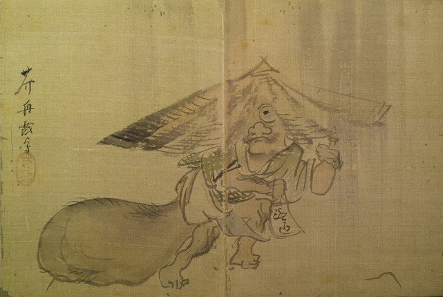

狸らしき化物。豆狸かと思われる。破れ笠をかぶって、顔の一部をのぞかせている。目玉は丸く、団子鼻で、口と顎に薄くひげをはやしている。緑色の格子柄の着物を着て、裾をからげており、巨大な陰嚢をひきずって歩いている。右手に帳面、左手に徳利を持っており、酒を買いに行くところと思われる。
著作者：芥舟／出典：親書誌：U426_nichibunken_0155：東都画家妖怪画帖；トウトガカヨウカイガチョウ／日付：2010／資源識別子：U426_nichibunken_0155_0012_0000
Copyright (c)2010- International Research Center for Japanese Studies, Kyoto, Japan. All rights reserved.